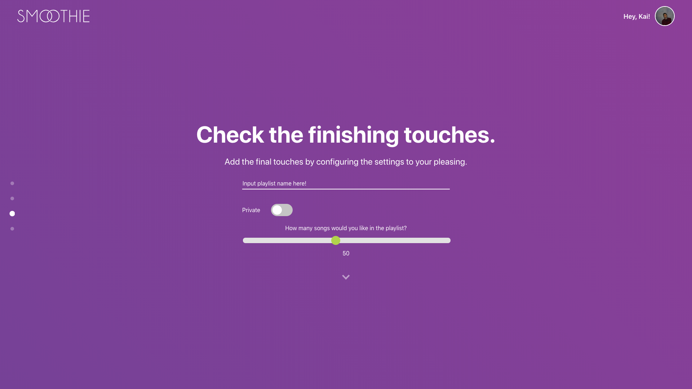
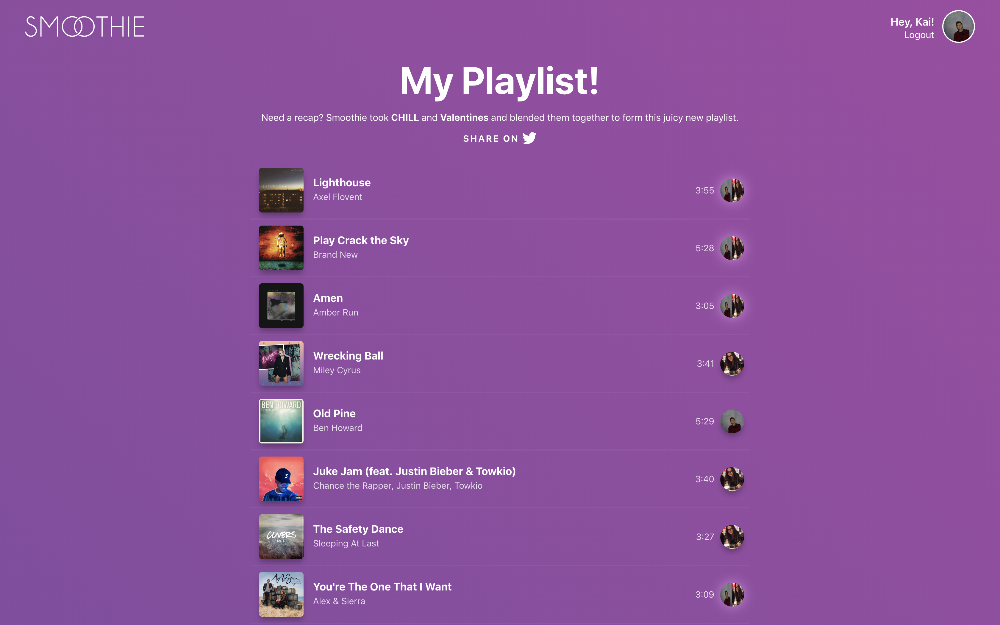

The idea
Using AI to generate playlists which
appeal to multiple user's unique music tastes.
This project was the result of my university dissertation. Below are a number of screenshots covering the main screens of the system and a brief explanation of the technical implementation.
To read the full dissertation click here.

The initial view/screen of Smoothie
The system uses the Spotify API to authenticate the user and gain access to their playlist data. Once authenticated, the user is then redirected to the first playlist input screen.

One of two playlist input screens
Each playlist on Spotify can be indentified using a URI, which the user can simply copy and paste from their Spotify client. Upon pasting the URI into the input field, a call is made to the Spotify API to retrieve the playlist data, and a preview is shown in order for the user to confirm that the correct playlist has been used.

A playlist input screen following the user entering a playlist URI
Once two playlists have been entered into the system, the user is presented with an options screen where they can fine-tune the details for the generated playlist.
Settings screen where the user can customise their generated playlist
After the settings have been configured, the AI gets to work and a blended playlist is generated. The high-level logic of the system is as follows.
Each playlist is individually analysed based on the audio features of each song within it, and a neural network is trained with the intention to be able to understand the playlist owner's music taste. A song can then be suggested and the model can predict whether or not the owner of the playlist would like it or not. This training is done on both of the provided playlists.
Once the training is complete, Smoothie then begins to input songs to the model and a prediction for which playlist is more likely to contain that song is returned. If the model is unable to predict a clear winner for which owner is most likely to have the song in their playlist it can be assumed that the song will appeal to both owners. Thus, that song is added to the new playlist.
This process is repeated until a playlist of the required length is generated.
The final screen of Smoothie displaying the generated playlist
Overall, Smoothie is a very effective recommender system. The generated playlists are a good blend of both input playlists and the user's who have tested it found it to be simple to use and engaging throughout.